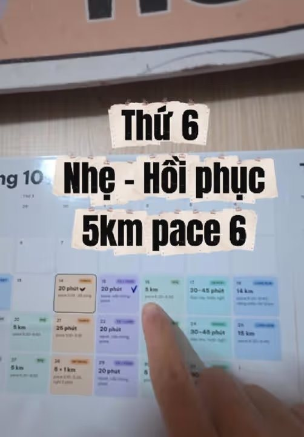
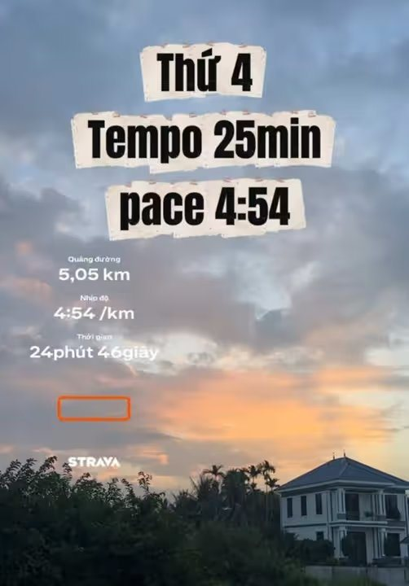
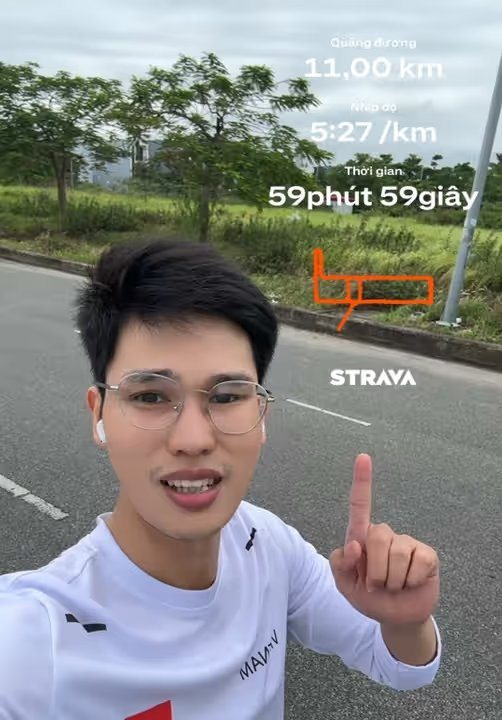
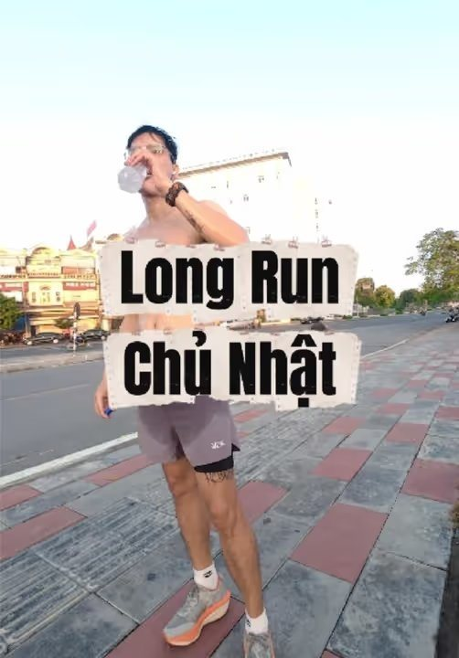

Chiều ngày 11/11/2026, trên cung đường quen thuộc ở Đồng Thái.
Tôi dừng đồng hồ, cúi xuống nhìn màn hình Strava:
10,01 km – pace 4:58/km – 49 phút 40 giây.
Đứng giữa đường mà tôi cười một mình như thằng dở.
Lần đầu tiên trong đời, tôi chạy 10km dưới 50 phút.
1. Quay lại 8 tháng trước
Tháng 3/2026, tôi bắt đầu chạy lại sau nhiều năm chỉ biết đi ca, về nhà, rồi lại đi ca.
Những ngày đầu…
chạy được 500–700m là tôi đã phải dừng lại đi bộ. Tim đập loạn, chân nặng như đeo chì.
Gần một tháng sau tôi mới chạy được 5km không nghỉ – 31 phút.
Ngày 20/05, ngày thứ 60 của hành trình “60 ngày tìm lại”, tôi chạy được 10km không nghỉ lần đầu tiên. Strava ghi lại: 10,22km trong 1 giờ 12 phút – pace 7:04.
Rồi tháng 6 hoàn thành 150km. Tháng 8 chạy xong thử thách “Bước chạy Độc Lập 100km” và nhận tấm medal đầu tiên.
Đến đầu tháng 10, tôi chạy 10km vẫn quanh mốc 1 tiếng – pace gần 6.
Nghĩa là để xuống dưới 50 phút, tôi phải cắt khoảng 1 phút cho mỗi km.
Ai chạy rồi mới biết, 1 phút mỗi km là cả một khoảng cách.
2. Thay đổi lớn nhất: chạy có giáo án
Trước đây tôi chạy theo cảm hứng. Hôm nào khỏe thì chạy nhanh, hôm nào mệt thì chạy chậm. Chạy nhiều nhưng không tiến bộ được bao nhiêu.
Từ giữa tháng 10, tôi bắt đầu chạy theo giáo án. Viết hẳn lên bảng, dán ở nhà, làm xong buổi nào đánh dấu buổi đó.
Một tuần của tôi đại khái như thế này:
- Thứ 4 – bài nhanh: tempo 20–25 phút ở pace 4:54–4:55, hoặc interval 5 vòng chạy pace 5, nghỉ 2 phút.
- Thứ 6 – hồi phục: 5km pace 6, chạy thật nhẹ để cơ thể kịp hồi lại.
- Chủ nhật – long run: chạy dài, tăng dần từ 11km lên 14km rồi hơn nữa.
- Những ngày còn lại: chạy nhẹ hoặc nghỉ.


Điều tôi học được: không phải buổi nào cũng phải chạy nhanh.
Ngày nhẹ phải chạy thật nhẹ, thì ngày nặng mới đủ sức chạy thật nặng.
3. Những buổi tempo “nói không ra hơi”
Bài tôi ngại nhất là tempo.
Chạy 25 phút liên tục ở pace 4:54, đến phút thứ 15 là bắt đầu muốn dừng. Phút thứ 20 thì đầu chỉ còn đúng một câu: “Thôi, đủ rồi.”
Nhưng chính những buổi đó dạy cơ thể tôi quen với cảm giác chạy nhanh mà không gục.

Ngày 05/11, tôi chạy tempo 5km pace 4:55.
Ngày 01/11, long run 14km pace 5:48.
Ngày 09/11, chạy nhẹ 11km trong 59:59.
Đến lúc đó tôi mới dám nghĩ: hay là thử 10km dưới 50 phút xem sao?

4. Buổi chiều 11/11
Tôi không chọn ngày đẹp, cũng không có giải đấu nào.
Chỉ là một buổi chiều đầu đông, trời mát, đường vắng. Cảm thấy chân ổn thì chạy.
Km đầu tiên tôi chạy hơi sung – 4:41. Biết là nhanh quá, tôi ép mình chậm lại, giữ quanh 4:52–5:00 cho đến km thứ 5.
Từ km thứ 6, chân bắt đầu nặng. Pace tụt xuống 5:10, rồi 5:05, 5:07. Nhịp thở dồn lên.
Km 8 và 9 là đoạn khó nhất. Đầu tôi lại bắt đầu “thương lượng”:
“Hôm nay chạy thế là tốt rồi. Hôm khác thử tiếp.”
Nhưng tôi nhớ lại những ngày chạy 500m đã phải dừng.
Nhớ những buổi tempo muốn bỏ cuộc mà vẫn chạy cho hết.
Và tôi chạy tiếp.
Km cuối cùng, tôi dồn hết những gì còn lại – 4:50, nhanh thứ hai cả buổi.
49:40.
5. Điều tôi nhận ra sau con số 49:40
Với những runner lâu năm, 10km dưới 50 phút chẳng có gì to tát.
Nhưng với một người U40, từng đi ca 12 tiếng, từng chạy 500m đã phải dừng… thì đây là một cột mốc rất lớn.
Và nó không đến từ một buổi chạy “bùng nổ”. Nó đến từ:
- 8 tháng không bỏ cuộc
- Những buổi chạy nhẹ tưởng như vô nghĩa
- Những buổi tempo muốn dừng mà vẫn chạy tiếp
- Và một giáo án được làm theo đều đặn mỗi tuần
Công việc cũng vậy. Ở nhà máy 9 năm, tôi hiểu rằng muốn giảm tact time, giảm tỷ lệ lỗi thì không có phép màu nào cả. Chỉ có cải tiến từng chút một, mỗi ngày một chút.
Chạy bộ chỉ là một cách khác để tôi học lại bài học đó.
6. Mục tiêu tiếp theo
Ngày 25/10, tôi đã chạy xong 21km đầu tiên trong 2:09:55 (đọc câu chuyện ở đây). Mục tiêu tiếp theo của tôi là bán marathon dưới 2 giờ.
Vẫn là giáo án. Vẫn là những buổi long run sáng Chủ nhật. Vẫn là kỷ luật.

Nếu bạn cũng đang muốn bắt đầu chạy bộ…
đừng nghĩ đến 10km hay 21km vội.
Cứ bắt đầu từ 500m. Mỗi ngày một chút. Chậm cũng được, miễn là không dừng lại.
👉 Xem video PR 10km trên TikTok: @vandq96 – PR 10km 49:40